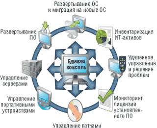
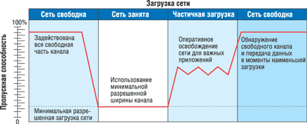
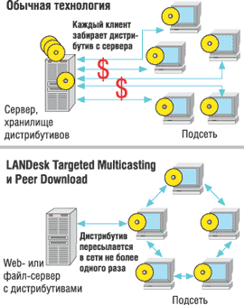
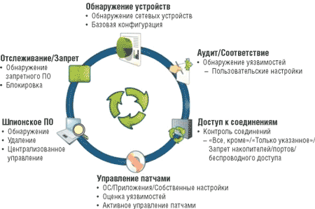
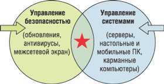

Андрей Колесов
В последние годы программные средства компании LANDesk Software (http://www.landesk.com) неизменно входят в список лидирующего ПО в области управления вычислительными ресурсами корпоративных систем. Растет его популярность и в нашей стране. Наибольшую известность получил комплексный пакет LANDesk Management Suite (LDMS), применяемый для централизованного управления рабочими станциями и серверами в гетерогенных сетях. На самом деле арсенал предложений LANDesk постоянно пополняется различными дополнительными инструментами для автоматизации задач ИТ-управления. А в конце 2004 г. компания существенно усилила свое присутствие на данном рынке, выпустив решение для защиты информационных систем предприятия LANDesk Security Suite.
Программные продукты LANDesk Software не рассматриваются как специфичные для конкретной отрасли, однако исторически компания наиболее успешно выступала в области финансов, образования и связи, а также в госструктурах. С точки зрения размера бизнеса ее позиции наиболее сильны в сегменте организаций в 1000-5000 пользователей, хотя неплохая окупаемость была достигнута и на уровне в 250 пользователей, а у самого крупного клиента компании число пользователей существенно превышает 100 тыс.
LANDesk Software - двадцать лет на рынке управления ИТ-ресурсамиИстория компании LANDesk Software началась еще в 1985 г. с создания фирмы LAN Systems, специализировавшейся на разработке средств управления компьютерными сетями. В 1991 г. фирма была приобретена корпорацией Intel, и с тех пор данное ПО под торговой маркой LANDesk в течение 11 лет успешно развивалось внутри Intel. Программные решения поставлялись в составе серверов и системных плат Intel (Intel LANDesk Server Manager, Intel LANDesk Client Manager), а также как самостоятельный продукт Intel LANDesk Management Suite. Программный продукт становился все более универсальным, поддерживающим не только технологии Intel, и 18 сентября 2002 г. подразделение LANDesk было выделено в самостоятельную компанию LANDesk Software, головной офис которой расположен в Солт-Лейк Сити (шт. Юта, США), а региональные подразделения находятся по всему американскому континенту, в Европе и Азии. К настоящему моменту LANDesk Software поставила во всем мире более 250 млн лицензий на свое ПО. Среди его покупателей такие компании, как Merck, Raymond James, Yahoo!, America General, Schering-Plough, Remedy Corporation, NASA, Coca Cola и BT Wholesale, обладающие десятками тысяч лицензий. Стратегическими партнерами LANDesk выступают Intel, Microsoft, HP, Dell, Symantec, IBM, Siemens, ASUS, FrontRange, BMC и другие ведущие ИТ-постащики. Intel выбрала продукты LANDesk в качестве базового ПО для технологии Intel Active Management, которая будет интегрирована в ее микросхемы следующего поколения. По оценкам различных аналитических агентств (в частности, IDC и Gartner), LANDesk Software входит в число лидеров данного сегмента рынка. В частности, ведущие позиции ее продуктов были отмечены летом 2004 г. на церемонии International Data Group UK - Network Awards 2004, где LANDesk Management Suite 8 получил награду "Продукт года 2004" в номинации Network Management Product, а в мае 2005 г. LANDesk второй год подряд была названа лидером Network Computing Magazine Well-Connected Award в категории бизнес-приложений для сегмента средних и крупных предприятий и организаций. Весной 2005 г. по результатам независимого тестирования The Forrester Wave: Client Systems Management Tools, Q2 2005 (инструменты для управления клиентскими системами) компания LANDesk Software была названа лидером среди поставщиков по всем трем номинациям в областях, в которых проводилась оценка: "Объединенное управление архитектурой в управлении клиентскими системами" (Client Systems Management - CSM - Unified Architecture Management), "Управление безопасностью CSM" (CSM Security Management) и "Управление конфигурациями CSM" (CSM Configuration Management). В конце 2004 г. LANDesk Software обновила свою линейку продуктов, выпустив LANDesk Management Suite 8.5 и новое решение LANDesk Security Suite, позволяющее повысить уровень информационной безопасности. В России и СНГ продвижением продуктов LANDesk занимается группа компаний Arbyte (http://www.arbyte.ru), представитель и авторизованный ESP-партнер LANDesk. Реализован уже целый ряд проектов на базе технологий LANDesk, среди которых можно назвать внедрения в ОАО "Силовые машины", Сургутнефтегазбанке, "Гипротюменьнефтегазе", "КазахОйл Актобе", ЦБ Армении и другие. |
LANDesk Management Suite
Пакет LANDesk Management Suite, на сегодня представленный версией 8.5, обеспечивает ИТ-профессионалам инструмент автоматизации решения задач системного учета, управления и активного контроля рабочих станций, серверов и мобильных устройств (рис. 1). Продукт обеспечивает решение трех основных задач:
- сбор и поддержание актуальных данных об ИТ-активах (инвентаризация аппаратного и программного обеспечения, управление изменениями, управление лицензиями и проведение аудита ПО);
- техническая поддержка пользователей;
- управление ПО, в том числе развертывание ОС и поддержка безопасности путем установки соответствующих обновлений ПО и антивирусных баз, упрощение миграции большого числа клиентских мест на новое ПО.
|  | Рис. 1. LANDesk Management Suite решает весь комплекс задач управления вычислительными ресурсами. |
Расширение базового функционала достигается за счет применения дополнительных модулей. Так, System Manager и Server Manager обеспечивают непрерывный контроль за целостностью и исправностью аппаратной и программной части ПК, мониторинг производительности, контроль критически важных параметров. Asset Manager расширяет функционал LANDеsk Management Suite с управления ИТ-активами до уровня управления активами предприятия, позволяет специалистам ИТ-отдела, менеджерам и финансистам инвентаризировать любые виды активов и отслеживать изменения из единого унифицированного депозитория. Наконец, Security & Patch Manager дополняет функционал LANDesk Management Suite в области непрерывного обнаружения уязвимостей, исправления и управления патчами в гетерогенных средах.
LDMS обеспечивает работу в сложном сетевом окружении, где используются самые разные ОС (Windows, Netware, Linux, MacOS, Unix). Один сервер LDMS может обслуживать до 10 тыс. серверов и клиентских ПК. Масштабирование решения достигается за счет мультисерверных конфигураций LDMS - есть реальные проекты с числом узлов более 100 тыс. (по оценкам специалистов LANDesk, данная технология способна обслуживать не менее 200 тыс. узлов корпоративной системы).
LDMS поддерживает имеющиеся на предприятии СУБД, приложения и технологии служб каталогов в гетерогенных сетевых ИТ-средах, одновременно минимизируя загрузку сетевых ресурсов. Его база данных может храниться в Microsoft SQL Server или Oracle Database Server, хотя при числе узлов до 2 тыс. можно воспользоваться и базой данных MSDE, встроенной в продукт.
Продукт использует целый ряд собственных эффективных технологий, в частности, для экономии сетевых ресурсов (рис. 2). В результате LDMS не мешает имеющимся сетевым приложениям, поскольку контролирует загруженность сети в режиме реального времени и при разгрузке канала задействует неиспользуемую часть пропускной способности сети, а при загруженности снижает свой трафик до разрешенной администратором величины (по умолчанию - 0%). Обнаружив слишком тонкий канал или удаленное подключение (порог задается администратором), например, подключение с ноутбука к почте через модем или мобильный телефон, LDMS не загружает его передачей дистрибутивов. Однако назначенная задача "заливки" ПО на такой мобильный ПК будет выполнена при первом же его подключении по более "толстому" каналу.
|  |
| Рис. 2. LDMS обеспечивает доставку пакетов с учетом загруженности сети, предоставляя приоритет бизнес-приложениям. |
Для всех задач управления сетевыми ресурсами LDMS применяет единый агент с гибко настраиваемым функционалом, использующим возможности ряда ключевых технологий, в частности, Targeted Multicasting и Peer Download (рис. 3).
|  | Рис. 3. Экономичная технология развертывания ПО. |
Технология Targeted Multicasting обеспечивает передачу дистрибутива в подсети не более одного раза. Мультикастеры (ретранслирующие ПК) при этом выбираются LANDesk самостоятельно или указываются администратором. Любой ПК, на который устанавливалось данное ПО, в дальнейшем может быть источником дистрибутива для других ПК в подсети. Дистрибутив сохраняется на компьютерах заданное администратором время. Это экономит дисковое пространство на ПК. Если дистрибутив при передаче или хранении подвергся изменениям/разрушениям, он не будет установлен, и администратор получит об этом уведомление. Контрольный hash-код для каждого ПО автоматически сохраняется при назначении задачи на Core server и используется для дальнейших проверок.
Broadcast при мультикастинге используется только для определения слабозагруженного ПК, обладающего дистрибутивом, сама передача дистрибутива на целевые ПК осуществляется по IP "точка-точка". За счет этого снижается нагрузка на сетевое оборудование.
Технология Peer Download обеспечивает докачивание дистрибутива с других ПК с побайтовой точкой останова в случае обрыва связи с очередным ретранслятором. Уровень разрешенной загрузки (в процентах от ширины канала) задается администратором для любой задачи развертывания ПО.
Одна из наиболее частых операций в корпоративных системах - заливка приложений и ОС на новые ПК по сети. При ее выполнении LDMS не требует выделенного сервера PXE в каждой подсети и переконфигурации маршрутизаторов, роль PXE proxy может выполнить любой ПК под управлением Windows 2000/XP с агентом LANDesk. При этом PXE-меню можно защитить паролем от "продвинутых" пользователей, поддерживаются в том числе образы ОС (Norton Ghost, Drive Image и прочие). Если ПК уже был в базе данных, то при установке новой ОС можно автоматически вернуть ему прежнее имя.
Кроме того, в LDMS можно задействовать технологию безопасного дистанционного управления ПК, базирующуюся на авторизации с использованием цифровых сертификатов. При такой схеме данные учетной записи не передаются по сети и не могут быть перехвачены.
В настоящее время компания предлагает отдельный программный комплекс LANDesk Instant Support Suite PRO, включающий все необходимое для дистанционной диагностики и решения проблем пользователей через Интернет. Он обеспечивает автоматический сбор, ведение истории и поддержание актуальности детальной инвентарной базы данных аппаратного и программного обеспечения, управление изменениями. Помимо инвентаризации, продукт предоставляет следующие возможности: автоматическая реакция на события, включая генерацию предупреждений, поддержка CBA (базовый агент LANDesk) с функционалом обмен данными/запуск приложения, отчетность, Web-консоль и Win32-консоль. С LANDesk Inventory Manager можно осуществить бесшовный переход на полный LANDesk Management Suite по схеме upgrade.
В большинстве крупных организаций совместно с LDMS используются такие средства, как HP OpenView, CA Unicenter, Remedy, FrontRange, антивирусное ПО Symantec. Из их консолей функционал LDMS доступен через контекстное меню или прямую связь с БД, поскольку структура базы данных открыта для ссылок и изменения. В целом комплекс методов интеграции, включая открытый API, детально документирован, а обширная база инсталляций (более 250 млн лицензий по всему миру) позволила отработать всевозможные взаимосвязи продуктов.
В рамках модернизации семейства LDMS в конце 2004 г. компания LANDesk выпустила обновленное решение LANDesk Server Manager 8.5, предназначенное для управления серверами в реальном масштабе времени. В нем появились следующие основные новшества:
- графическая панель управления с цветовой и графической индикацией состояний серверов (удобна для визуального оперативного контроля ситуации);
- безопасное дистанционное управление на базе ssh, sftp;
- спроектированный "с нуля" серверный агент, запускающий компоненты "по требованию" и использующий минимальное количество ресурсов;
- расширенный инструментарий IPMI, дистанционное управление сервером без взаимодействия с агентом или ОС;
- мониторинг производительности (на базе интерфейсов CIM, WMI, SMBIOS, WBEM и WfM) и уязвимостей, возможность дистанционной установки/деинсталляции патчей и приложений без обязательной перезагрузки системы;
- поддержка IBM BladeCenter;
- кросс-платформность (Windows, Linux);
- ролевое распределение прав доступа.
LANDesk Security Suite
Хотя в LDMS уже имеется целый ряд функций обеспечения безопасности, компания LANDesk, учитывая постоянно возрастающие потребности организаций в улучшении защищенности их ИТ-систем, представила в конце 2004 г. новый набор LANDesk Security Suite (LDSS). Этот новый интегрированный инструмент направлен на усиление защиты пользователей на уровне устройств от шпионского ПО, "закладок" в программах, сетевых червей, неавторизованного доступа и других уязвимостей (рис. 4).
|  |
| Рис. 4. LANDesk Security Suite поддерживает все аспекты безопасности корпоративных систем. |
В целом появление LDSS соответствует существующей в ИТ-индустрии общей тенденции слияния традиционных инструментов управления конфигурациями с недавно появившейся категорией инструментов управления безопасностью (рис. 5), находясь на стыке этих двух рынков. До недавнего времени предполагалось, что установка обновлений относится только к ведению систем управления клиентскими компьютерами (Client System Management - CSM). Однако в последнее время новые вирусы появляются через несколько недель и даже дней после выпуска обновлений, которые исправляют критически важный дефект безопасности.
|  | Рис. 5. LANDesk Security Suite иллюстрирует тенденцию слияния систем управления информационной безопасностью и компьютерным парком. |
LDSS наиболее эффективен в самых ответственных сегментах информационных систем: там, где необходим более строгий уровень безопасности для устройств, в мобильных и децентрализованных средах, с постоянно растущим числом узлов корпоративной сети. На крупных предприятиях особенно высок риск атак шпионского и вредоносного ПО, когда пользователи используют Интернет в служебных или личных целях, вне зависимости от наличия или отсутствия сетевого экрана. Продукт помогает ИТ-подразделениям активно предотвращать или блокировать эти атаки, снижая время простоя и стоимость технической поддержки.
LDSS объединяет в единой удобной консоли множество технологий и механизмов обеспечения безопасности, кратко охарактеризованных ниже.
Система управления обновлениями (Patch Management). Компонент Patch Manager позволяет администратору просматривать пакеты обновлений, установленные на подотчетных ему компьютерах (в том числе и те, которые пользователь мог установить самостоятельно). При необходимости администратор может удалить обновления, признанные ненужными или даже опасными. Patch Manager предоставляет широкие возможности управления автоматической установкой обновлений, например, определяя конфигурацию по умолчанию, необходимость перезагрузки после установки обновлений и другое поведение системы в процессе установки.
Защиты от шпионского и рекламного ПО (Anti-Spyware). Модуль защиты от вредоносного ПО (Spyware Detection and Removal) выполняет все задачи, связанные с распознаванием, блокировкой, лечением и удалением таких хакерских программ, как троянские кони, контролеры поведения пользователя и нажатий клавиш на клавиатуре и других, которые мешают работе пользователей и непроизводительно расходуют ресурсы компьютера. Кроме того, этот модуль восстанавливает файлы, поврежденные в процессе борьбы с вредоносным ПО, и предотвращает повторное заражение вирусами.
Анализ угроз безопасности (Security Threat Analyzer). Компонент Threat Analyzer занимается поиском угроз, в том числе проверяет, кто входит в группу администраторов и насколько это соответствует принятой политике безопасности. Он определяет также, какие каталоги доступны для монтирования извне, и опять-таки проверяет, насколько это санкционировано. Он же следит за тем, какие сетевые сервисы доступны внешнему пользователю и насколько это оправданно. Threat Analyzer проверяет работу контролера домена, доступность гостевого входа, работу межсетевого экрана, качество паролей, версии ОС, уровень безопасности браузеров и многое другое, что может служить признаком успешно завершенной атаки.
Система обнаружения и блокирования несанкционированных приложений (Application Blocker). Если же вирус все-таки проник в систему и начал активно размножаться, то его должен заметить анализатор поведения программ Application Blocker. Этот компонент знает, какие приложения могут вести себя подозрительно и в чем именно это выражается. Кроме того, он определяет и блокирует запуск приложений, которые не разрешены политикой безопасности, не относятся к корпоративному стандарту или просто уменьшают защищенность или производительность вычислительной системы.
Модуль для поиска новых дефектов (User-defined Vulnerabilities) и система управления доступом (Connection Control). Новый компонент Connection Control Manager контролирует доступ сетевых приложений к ресурсам компьютера. В частности, он ограничивает доступ по сети к таким устройствам, как модемы, различные съемные накопители, беспроводные устройства, к шине USB и параллельным и последовательным портам. Это же средство отслеживает, насколько разрешено то или иное сетевое подключение, и в случае нарушения политики безопасности поднимает тревогу.
Собственное обновление LANDesk. Модуль LANDesk Updates занимается обновлениями различной информации, связанной с работой Security Suite; в частности, этот модуль устанавливает обновления всех компонентов, входящих в пакет, изменяет правила работы компонентов, определяет правила обновления приложений. При этом различаются четыре типа обновлений: ядро (Core), консоль (Console), Web-консоль (WebConsole) и клиент (Client), каждый из которых относится к соответствующим элементам самого пакета Security Suite. С помощью этого компонента система может постепенно развиваться и настраиваться на отражение новых угроз.
Пакет LDSS может устанавливаться самостоятельно либо интегрироваться в систему управления LANDesk Management Suite.